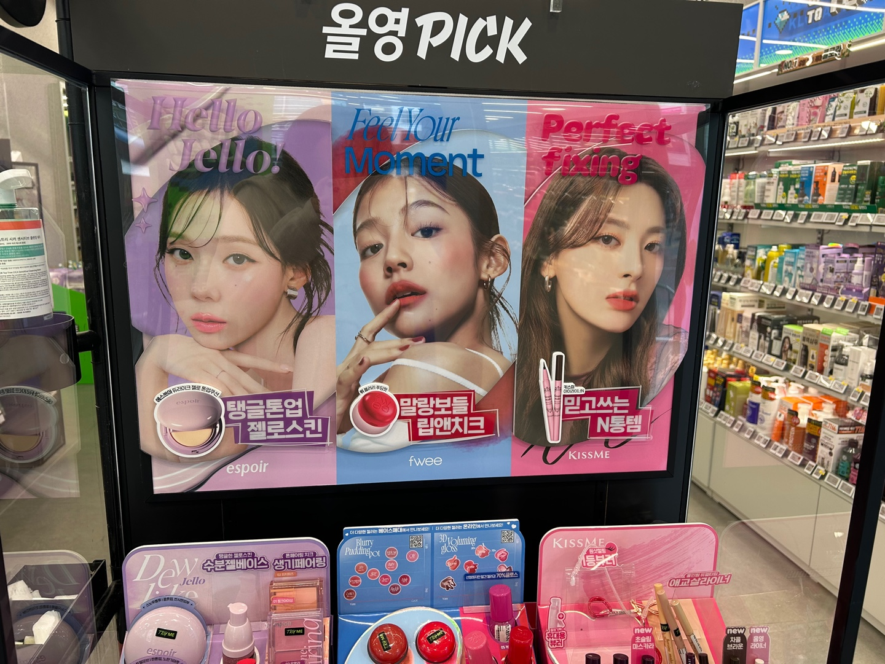
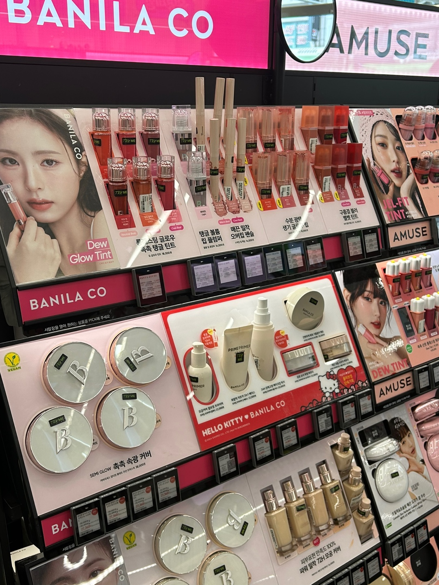
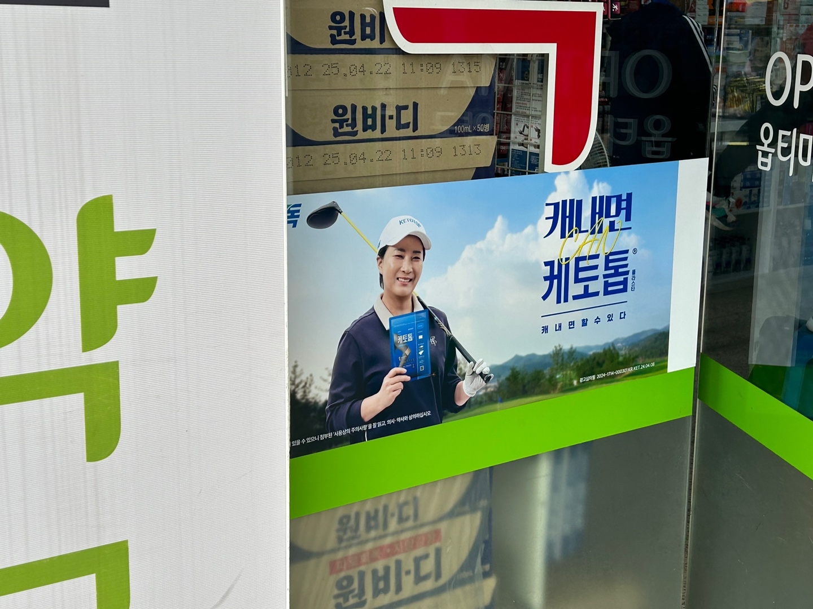
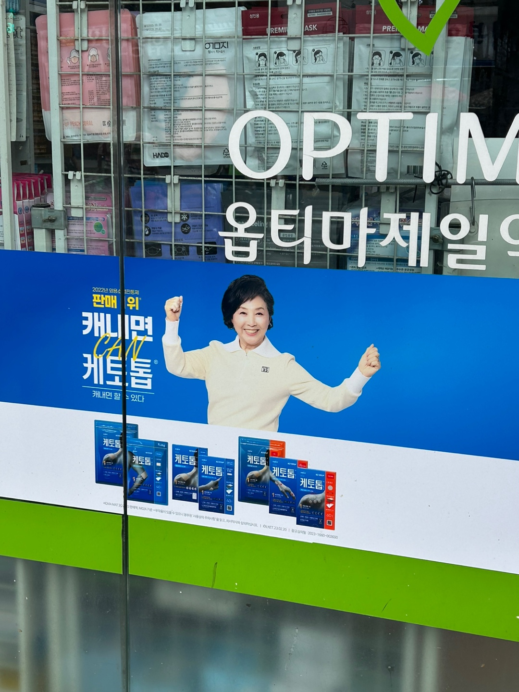
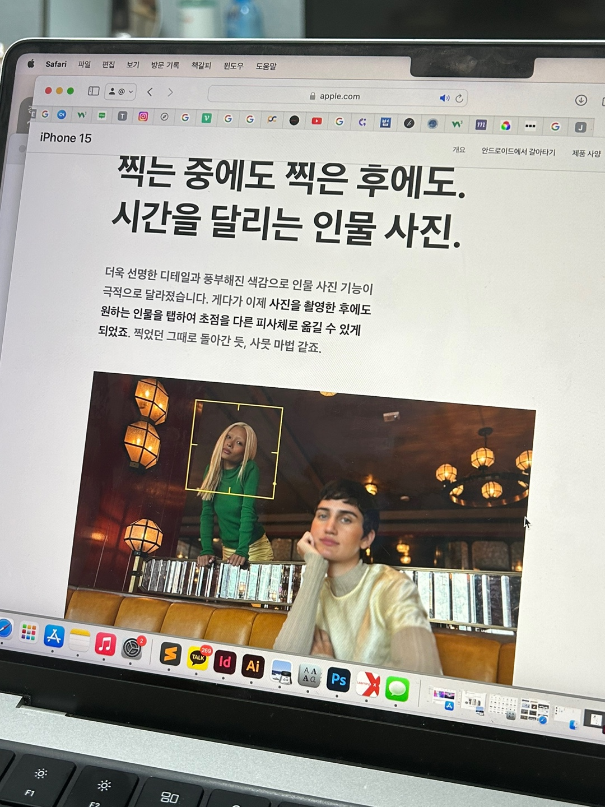
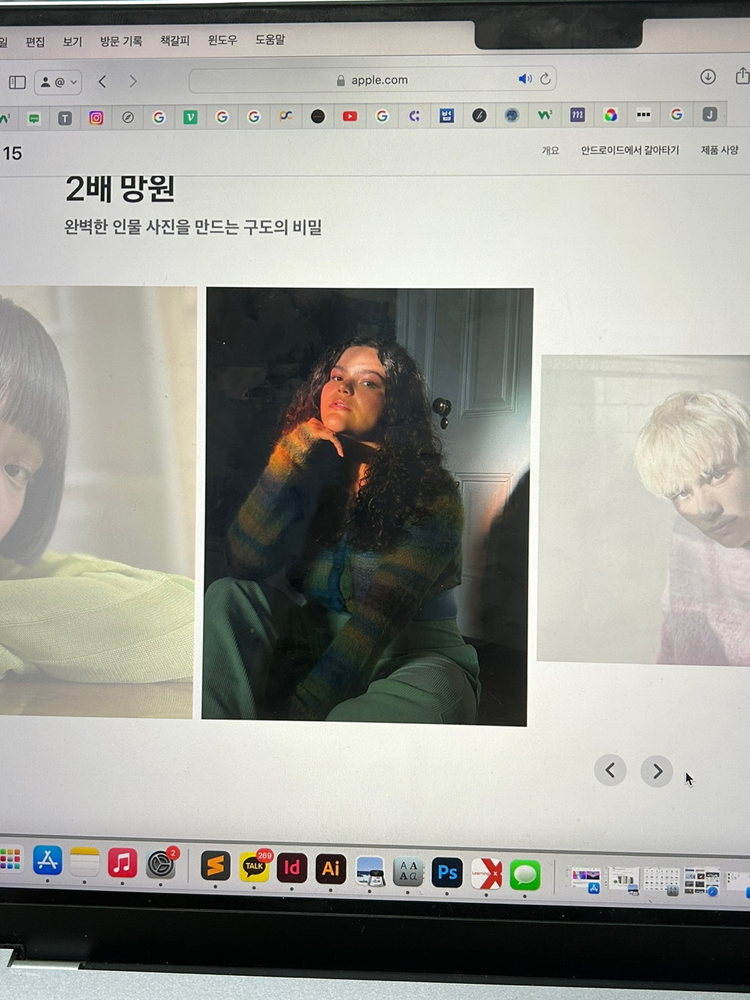

올리브영 안에서 촬영한 화장품 광고 모델 사진이다. 광고 제품을 들고 촬영한 사진이다. 화장품의 실제 사용력을 보여주기 위해서 얼굴을 위주로 촬영한 사진이 대부분이었다.
 올리브영 안에 있는 많을 모델을 둘러봐도 여성 모델의 사진이 많았다. 그럼 왜 우리는 화장품 광고 모델을 여성으로 사용할까? 아마도 화장품은 대체로 여성이 사용하는 제품이라는 이미지가 있기 때문이다.
자신이 사용하는 제품의 모델 혹은 후기 작성자가이 나와 비슷한 사람이라면 더 믿고 살 수 있으니 가장 많은 소비층인 젊은 여성 모델을 사용하는 것은 아닐까하는 생각이 들었다. 반대로 남성, 노인 등 비주류 소비층은 많은 정보를 얻을 수 없다는 문제도 있다.
우리가 생각하는 이미지보다는 더 많은 사람들을 생각하여 광고 모댈을 사용하면, 더 많은 사람들이 좋은 정보를 얻을 수 있다. 또한 더 다양하고 재밌는 광고를 만들 수 있을 것이다.
올리브영과 비슷하게 주요 소비층과 사람들의 이미지로 인해 선택된 광고 모델의 예시
관절약 광고 사진으로 관절이 좋지 않은 노인의 대한 이미지가 있다고 생각한다.
애플 광고 중 한 장면이다. 애플은 전 세게 사람들이 사용하는 제품인 만큼 광고에 다양한 인종이 등장한다.
 그렇다면 다른 광고들은 어떤 인종을 사용할까? 관련한 광고들과 기사를 찾아보며 여러 사례들을 찾았다.
하지만 애플처럼 다양한 광고 모델이 등장하는 사례보다는, 광고 속 인종 차별에 대한 사례를 더 많이 찾아볼 수 있었다. 예를 들어 dove (비누, 샴푸, 린스 등을 생산하는 세계적인 기업 도브)의 광고 중 흑인 여성이 도브 제품을 쓰고 난 뒤 백인 여성으로 변하는 사진을 광고로 사용한 적이 있다. 어두운 피부인 흑인이 제품을 사용하면 흰 피부로 바뀔 수 있다는 백인 우월주의 사고를 담은 인종차별 광고라고 볼 수 있다.
사람들이 생각하기에 흰 피부가 예쁜 것이라는 이미지가 있기 때문에 앞에 예시와 같은 광고가 탄생했다고 생각한다. 이렇게 우리는 무의식 중에 우리가 더 좋다고 생각하는 이미지를 가지고 살아가는 것이다.
정치라는 관점으로 여러 이미지를 생각해 사진을 찍고, 글을 읽어보니 이런 문장을 하나 읽었다. 인간은 고정관념을 가지기 쉬운 존재이다.
고대 그리스와 로마의 창백한 대리석과 청동 조각상은 미의 기준이었다. 하지만 과학자들이 적외선, 엑스레이, 자외선, 스캔을 통해 원래는 화사한 컬러로 칠해져있다는 걸 증명해냈다.
사실 관계 여부의 상관없이 하나의 사실을 믿고 우리의 안에 깊게 고정관념이 생길 수 있다는 것을 깨달을 수 있었다.